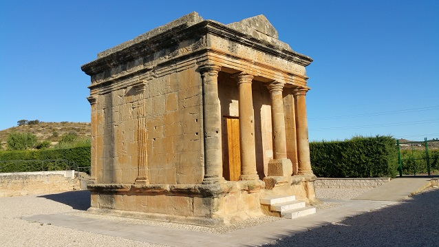
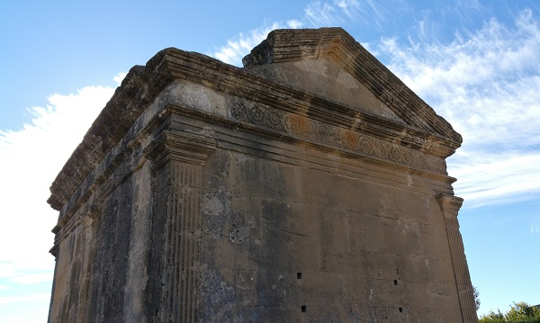

|
Mausoleo romano de Fabara
- El mausoleo romano posiblemente mejor
conservado de toda España.
- Monumento funerario de grandes dimensiones
que data del siglo II y que fue levantado para acoger el cuerpo de
L. Aemili Lupi.
- El Mausoleo de Fabara imita en su forma a un
templo romano. Su planta se orienta hacia al Este y tiene unas
dimensiones de 7,40 x 6,06 metros. Es un pequeño templo tetrástilo
de orden toscano.
|
 |
 |
|